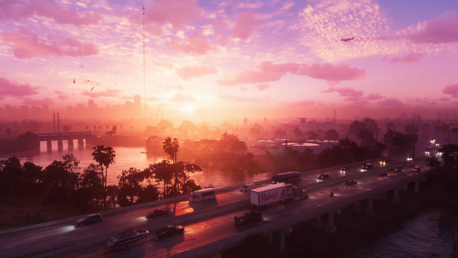

GTA 6: Everything We Know So Far
August 31, 2024
The long-awaited next installment in the Grand Theft Auto series, GTA 6, is finally on the horizon, and fans couldn't be more excited. Developed by Rockstar Games, the upcoming title is set to be one of the most ambitious games ever created, promising to push the boundaries of open-world gaming with its vast and richly detailed environment.
GTA 6 is rumored to return to Vice City, a fan-favorite location inspired by Miami, but with a twist. Reports suggest that the game will feature an expanded map, potentially incorporating multiple cities, each with its own unique atmosphere and activities. Players can expect a world brimming with life, from bustling city streets to serene beachfronts, all rendered with stunning detail thanks to Rockstar’s advanced game engine.
One of the most exciting aspects of GTA 6 is its narrative approach. The game is expected to feature multiple protagonists, much like GTA V, but with more dynamic storytelling that responds to players' choices. Rockstar is reportedly focusing on delivering a deeper, more immersive narrative experience, where every decision players make can impact the world and the story in meaningful ways.
Additionally, GTA 6 is rumored to include a more complex and interactive environment. Buildings, for example, may have more accessible interiors with detailed designs and hidden secrets for players to discover. This could add a new layer of exploration, encouraging players to interact with the game world in more meaningful ways beyond just completing missions.
Rockstar is also looking to innovate with GTA 6's multiplayer experience. While details are still scarce, there are rumors of a persistent online world that evolves over time, influenced by player actions. This would mark a significant shift from the traditional GTA Online format, aiming to provide a more integrated and engaging multiplayer experience.
There is also talk of introducing a new "wanted system" in GTA 6 that would add more realism to the game. Instead of the traditional stars system, the new mechanism could include a dynamic police response that evolves over time based on the player's criminal actions. This means that law enforcement might remember the player's past activities and adapt their strategy accordingly, creating a more challenging and engaging experience.
Technologically, GTA 6 is expected to be a leap forward. With next-gen consoles and high-end PCs in mind, the game will likely feature cutting-edge graphics, real-time weather systems, and a living world that reacts to players' actions. The developers are aiming for a level of realism that will set new standards for open-world games. Ray tracing technology, advanced AI, and enhanced physics are just a few of the advancements that GTA 6 is expected to showcase.
GTA 6 is also likely to integrate more realistic driving mechanics. Leaks and rumors suggest that vehicle handling will vary greatly depending on the type of vehicle, terrain, and weather conditions. This would add another layer of immersion, making car chases and getaways more thrilling and dynamic.
Moreover, GTA 6 is expected to include more diverse gameplay elements. From business management and property investment to street racing and heist planning, Rockstar aims to offer a wide variety of activities that cater to different play styles. Players could spend hours simply exploring the world and engaging in side activities, all while progressing through the main storyline at their own pace.
While an official release date for GTA 6 has not yet been announced, Rockstar has hinted at a possible 2025 launch. The gaming community is eagerly awaiting more news and updates, but one thing is certain: GTA 6 is shaping up to be a game that redefines the genre and sets a new benchmark for what open-world games can achieve. As we wait for more information, fans can only imagine the possibilities and prepare for what could be the most revolutionary Grand Theft Auto title yet.